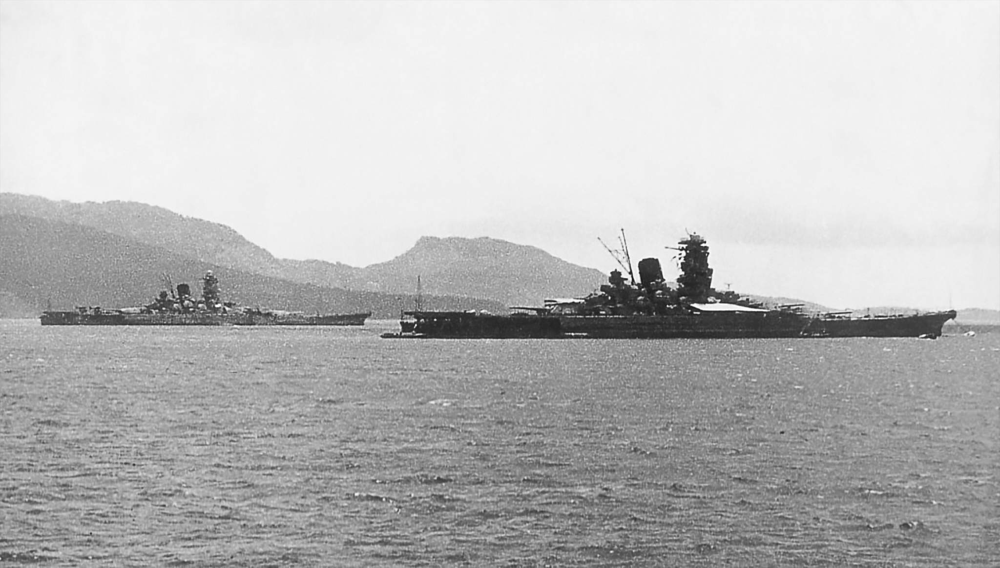

About the Imperial Japanese Navy

As an island nation, the Imperial Japanese Navy (IJN) was consistently at the forefront of Japan's military, characterized by advanced development of naval technology, quality shipbuilding and superb seamanship. Japan also readily looked to and accepted foreign input after the opening of their borders, from the rapid assimilation of foreign technology, to the frequent military exchanges with Dutch, French, British and United States navies, with plenty of naval students being sent to their naval academies and many ships, such as the Kongō, initially being purchased or built in their dockyards while Japan perfected her own shipbuilding capabilities.
At the onset of World War II, the IJN was among the few navies that had properly adopted naval aviation and the only navy with fully developed torpedo assets, achieving stunning victories and technological innovations with sweeping successes in the First Sino-Japanese and Russo-Japanese Wars. The Battle of Tsushima gave Japan the distinction of being the first Asian country to defeat a European power in the modern age. Other notable achievements included the sinkings of HMS Prince of Wales and HMS Repulse, the world's first purpose-built aircraft carrier, the deadly Type 93 “Long Lance” torpedo, and classes of cruisers and destroyers that remained among the most powerful of their class during the war.
However, several mistakes and oversights during the war resulted in the near-annihilation of the IJN by the United States Navy. Design flaws often resulted from cramming as much weaponry as possible into limited displacement, causing certain ships to become top-heavy and unstable. Although concentrating air assets into a single, cohesive force was effective and revolutionary, Japanese carriers were inadequately protected from counterattacks because of a lack of radar, faulty anti-aircraft gun design and configuration, and ineffective fire-control systems.
The surprise attack on Pearl Harbor, Hawaii, on 7 December 1941 was a tactical victory but a strategic error. It brought into the war a nation that, while initially under-prepared and unwilling to go to war, had near-limitless resources and unmatched production capabilities. Because little of Pearl Harbor's support facilities, naval repair yards, fuel depots, and logistics infrastructure were attacked, the United States quickly recovered and struck back from its primary naval base in the Pacific. Japan could not replace its losses as quickly and was heavily dependent on imports. Its unprotected shipping lines and under-investment in anti-submarine and anti-aircraft warfare allowed the United States Navy to slowly starve Japan into submission.


.jpg)